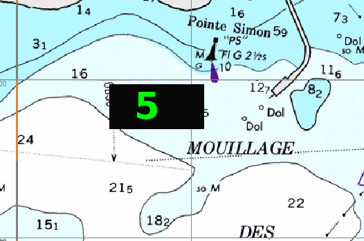

Farb-Schema
Dieser Button hat 4 Stufen
entsprechend dem US Standard für die Ansicht von Raster-Karten.
Das sind die Grundansicht, die Tageslicht-Ansicht, die Dämmerungs-Ansicht und die Nacht-Ansicht. Das sind Farb-Paletten, die in den Dateien der digitalen Karten hinterlegt sind.
Allgemein gibt es keinen Unterschied zwischen der Grundansicht und der Tageslicht-Ansicht. Daher sieht man auch beim ersten Klick auf den Button keinen Unterschied.
Die Wirkungsweise ist bei den Karten-Kategorien unterschiedlich.
S57 Vektor-Karten und die CM93 ver2 Karten.
Alle Karten zeigen die Dämmerungs- und Nacht-Stufe. Das heißt kein Unterschied beim ersten Button Klick, aber Dämmerungs- und Nacht-Palette bei folgenden Klicks.
US Raster-Karten
Diese arbeiten wie Vektor-Karten.
Andere Raster-Karten
Die meisten anderen Raster-Karten enthalten nur eine Standard Palette und der Button hat daher keinen
Effekt auf die Karte sondern nur teilweise auf OpenCPN.
Die brasilianischen Raster-Karten enthalten eine Dämmerungs- und Nacht-Palette, aber die angezeigten Farben entsprechen nicht der Erwartung.
Konvertierte Karte mit Hilfe von libbsb und tiff2bsb enthalten nur eine Standard Farbpalette.
Einstellung Ihres Computers für Nacht-Navigation
Für die Nacht-Navigation ist es wünschenswert, den kompletten Bildschirm abzudunkeln und nicht nur das OpenCPN Fenster. Nehmen Sie z.B. den Fall, daß ein Hafenführer
im PDF Format betrachtet werden soll.
Eine Lösung war vor OpenCPN Version 3.0.0 nur Plattform spezifisch und wurde dann später Plattform-übergreifend implementiert:
Ab Version 3.0.0 soll mit der Taste fn-F6 bzw. SHIFT + fn-F6 als Umkehrung der komplette Bildschirm verdunkelbar sein. Die Tastaturkombination ⌘ + G soll die gesamte Bildschirmfarbe ändern. Ein erster fn-F6 Tastendruck soll das Wort "MAX" erscheinen lassen, weitere fn-F6 Tastendrücke sollen die Dimmung ändern und "MAX" durch entsprechende Zahlen ersetzen.

Mac OS X
Das ist bei Mac OS X nicht erforderlich. Es können einfach die Helligkeits-Tasten F1 und F2 benutzt werden und dimmen damit den gesamten Bildschirm. In dieser OpenCPN Version für OS X wurde daher die obige Funktion komplett herausgenommen, da das Betriebssystem das sehr viel besser kann.